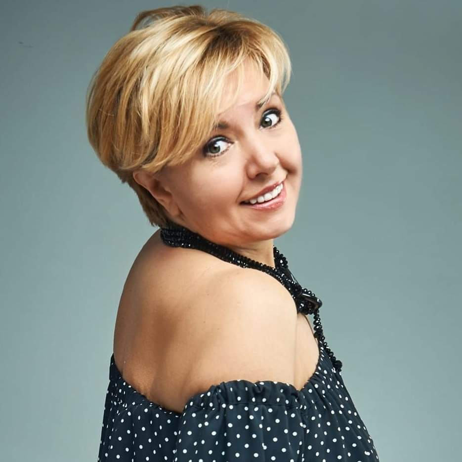
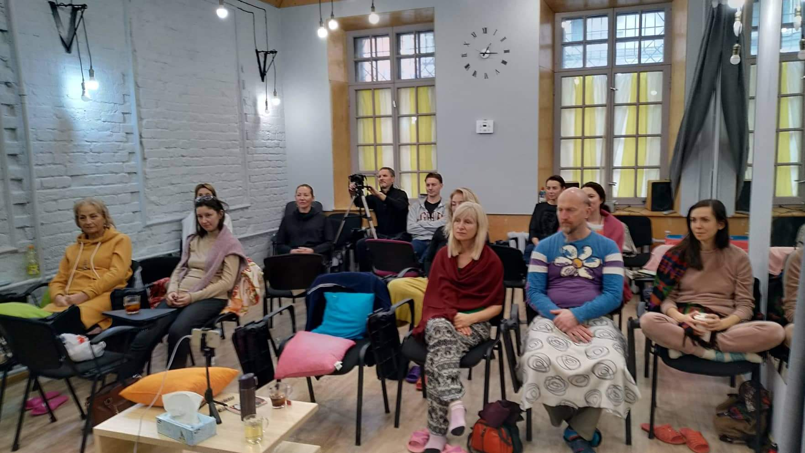

© 2022 Василий Керечанин
Связь +38 050 084-88-89
Алёна Олишевская (Киев) 2019. Организатор сатсангов и ретритов.
Благодарна Жизни за эту встречу.... Во Истину Мастер приходит, когда Ученик созрел.... И когда остаётся только ОДИН - это и есть счастье.... Кто знает, о чём это я, улыбнётся.... А кто не знает.... СЕЙЧАС ВЕСЬ МИР В РЕТРИТЕ (а дальше о себе) 2019 Эти трёхдневные он-лайн сатсанги Василия, как ретриты. Сегодня молчится, завтра вопросы и ответы, послезавтра тишина и ясность. Или всё наоборот, или всё вместе. Каждый раз не похож на предыдущий, как и я меняюсь, меняюсь, меняюсь... и уже не успеваю отслеживать...и не хочу.. Да, то, что неизменное, чего ему меняться, ему всегда хорошо, а точнее всё равно))).... столько шелухи слетело, и всего наносного, неестественного. Пишу, и меня окутывает изнутри состояние благости. Той благости, которой я являюсь на самом деле. Это ясно, как божий день... Но бывает...иногда ещё бывает... На всех сатсангах Василия случаются со мной пробуждения и после них, сатсанг продолжается тоже.... Пишу "пробуждения" так, как ещё есть мои личности. А личность не может быть просветлённой)))... Я ещё в пути. В пути, которого нет))... Сейчас вообще весь мир в ретрите и беЗконечном сатсанге. И мне хочется, чтобы всё больше и больше людей узнавали себя. Как говорит Муджи, есть Мистер, а есть Мастер... Мистеров много, хотя многие представляют себя Мастерами. Это их жизнь, их игра.... На сейчас я встретила своего Мастера. Я не бегаю по другим Мастерам. Мне это не нужно. Мне не нужно его переводить с иностранного языка на русский. И я его слышу сердцем... И вижу, что происходит со мной и с теми людьми, которые приходят к нему на сатсанги или общаются индивидуально. Это чудо, какие трансформации. Это так заметно... Мне радостно... Это такая тихая радость, которая живёт в сердце, и которой я делюсь... Давайте, пробуждаться ВМЕСТЕ.... Это так красиво... БлагоДарю
Михайло (Львiв) 2019
Дякую тобі Василій, що ти є. І дав зрозуміти і відчути нам всім, що ми одне ціле. Хочу поділитись досвідом, який отримав на цьому Сатсангу. Василь допоміг мені відчути на певний час, як це бути пробудженим. Постараюсь описати це словами (детальніше мій опис буде на відео на youtube) але слова дуже примітивні в порівнянні з досвідом. От опишіть смак полуниці тому, хто її ще не пробував. Це як занурення в воду. Коли ти стрибаєш у басейн, і вона тебе оговтує навколо, і ти ніби стаєш нею. Стираються границі. Ти ніби стаєш простором навколо. Все починає розчинятьсь крім твого буття. Ти просто є. Ти буття. Всі думки, переживання, страхи, плани, ім'я, тіло, люди, країна, планета... все відходить на другий план. Є просто та пустота яку можна спостерігати. З оптичної точки зору, пропадає передній, середній і дальній план. Все стає єдине. Знаєте, як колись були зошити і на задній сторінці були узори на які довго дивитись то вони ставали об'ємними. І в той момент спостереження ніби більше нічого не існувала і тільки ти про щось подумав як воно усе одразу зникає. Так і "мені" а точніше моєму его стало страшно. Чому? Тому що воно почало розчинятись як цукор в чаю. І подумало що помре. І не захотіло цього і я почав повертатись в тіло, в ту кімнату, до тих людей. І все прийняло звичну форму якою було до того. Дійсно, наш світ це театр а ми в ньому актори. Дякую Василь, за цей прекрасний досвід і це "оп'яніння" яке переживали пробудежені і святі. Його ні з чим не переплутає. І це прекрасне відчуття що можна робити все завгодно і не паритись. Це безцінно
Надя (Киев) 2019
Пробуждение - это остановка ума, и это произошло на ретрите в городе, не зависимо от того, где вы находитесь. Главное, разрешить себе, чтобы это произошло, и довериться тому, что с вами происходит при встрече с собой. Пробужение Нади случилось на 5 день ретрита в Киеве в 2019 г. Как это было: Видео
Юля (Киев) 2019
Легкость, спокойствие и приятное чувство безразличия случилось со мной. Кайфовое состояние, в котором «сложные» задачи решаются мгновенно и лишнее само уходит

Ирина (Одесса) 2019
Боялись вопросов, давали советы... В своих убеждениях искали ответы Никто не хозяин, ничто не душа... Сказал просветленный, ту речь не спеша.. Запутались люди в себе и вокруг И правды не знают, но верят и ждут И встреча с собою была хороша И в страхе сомнений, металась душа Боялась той встречи ,как ладана черт Мудрец был ,в своих убеждениях твёрд Ломал наши страхи ,как лёд ледокол Не каждый ,ответы, в тех дебрях нашёл Искали источник и поиск себя Ответ очевиден , - дышите любя.. В ларце откровений ,две фразы прочла. Напутствия фраза мне вектор дала: - Ты будь настоящей ,то ценность большая! - Тотально любить! Это как? Я не знаю... Я этот урок ,постараюсь принять, С собой быть в ладах и любя отдавать! Еще откровением мне дались обьятья, Не каждое тело , могу обнимать я.. Боюсь незнакомца , обнять всей душой Когда обнимаешь, уже не чужой! Ту маску сорвали с меня не с проста Снаружи доступность, внутри чистота.. Мудрец аскетично не прожил свой Век Под благостной маской "земной человек" Вот так я гостила на первом Сатсанге Пучина эмоций и мути , как Ганге.. Мы маски срывали без слез и страданий Оставив причины для, воспоминаний... Зайду ещё в гости, мне чаю налей Я Вас обнимаю любовью своей❤️❤️❤️ С любовью Ирина Новинская ноябрь 2019❤️
Андрей (Запорожье) 2019
Хочу поблагодарить Василия, за Сатсанг в Запорожье) У меня как и в прошлый раз, после Сатсанга Василия пришло внутреннее открытие. Спустя два дня, утром, было много раздумий о работе, детях, о страданиях, развитии, внутренних запросах, вопросах и так далее. А потом понимаю, что о чем бы я не думал о своих внутренних духовных запросах или о работе это все ум, меняются только мыслеформы. Не важно какой частоты или вибрации внутри вопрос, это все равно ум) Увидел ум как облако в котором я окутан и куда бы не пошел там все равно будет это облако. А что есть до ума, если это все ум, значит должно быть еще что то до него. Что то до переживаний, состояний, запросов, планов. Получилось посмотреть на свой ум со стороны и получилось выйти из облака, внутри сразу пришла тишина. Долго находится вне облака пока не получается, но теперь я его вижу, вижу его границы и это круто. Благодарю за любовь. Мама хорошо, у мамы на время отпустило голову, которая постоянно болит) У жены отпустило шею, и внутри ей по легче стало, вы перевернули им сознание, что можно жить по другому, без постоянных страданий)
Вика (Киев) 2019)
Хочу поделиться своим опытом ретрита у Василия. В течение всего ретрита ощущалось сильное энергетическое поле - поле любви. Мыслей почти не было. Время тоже исчезло . Все вечера в течение ретрита провела лежа - ощущались сильные изменения в теле. А утром почти летела на очередную встречу с Истиной.... После ретрита ощущение блаженства стало постоянным. И жизненные обстоятельства стали очень гармонично сами складываться. Даже на Бали удалось побывать......Я очень благодарна Василию за то, что он есть и что делится с нами Любовью
Надя (Львiв) 2020
Узнать, кто ты есть… Кто Я есть?... Как это было у Нади после сатсанга с Василием Керечанин. Надя отвечает на вопросы. Что было «до того», что случилось «в моменте» общения, какой вопрос Мастера Надю вернул в момент «здесь и сейчас» и как это, когда исчезают все мысли, и как это быть пробуждённой… Видео Надя пришла на сатсанг со страхом за здоровье (непонятные симптомы) и страхом смерти После беседы с Мастером, Надя получила свои ответы и на следующий день в переписке с Василием произошло Пробуждение – осознавание себя. Что происходило после этого … с ней…. её «болезнями» и вообще…в этом видео…. Видео
Саша (Киев) 2020
Пробуждение после сатсанга. Случайно попав в Ютуб на видео сатсанги с Василием Керечанин: - То что я увидел и услышал, меня каким-то образом привлекло. Потому что то, что я услышал, была Истина. Я не знаю, как я это почувствовал, но я это почувствовал. После этого мне захотелось ещё посмотреть, ещё... Я посмотрел несколько роликов, и когда увидел, что будет встреча с Василием в Киеве, я захотел прийти. ... - Изменения произошли после сатсанга в Киеве вживую. Просто то, что Василий сказал мне, я это сначала услышал, а потом на следующий день я это почувствовал. - А что он тебе сказал? - Он это говорил не только мне. Многим. Всем на сатсанге. Это звучит немножко странно. Он сказал, что МЕНЯ НЕТ. В смысле САШИ НЕТ…. Он рассказывал, как рождается личность, предлагал вспомнить тот момент, когда начинаешь себя помнить в детстве. И я начал искать этот момент, с какого момента я себя помню. И обнаружил, что младше 6 лет я себя не помню вообще. Совсем. Ничего не помню. И я себя начал помнить с того момента, когда я себя осознал Сашей. Когда я себя признал Сашей. Когда мне сказали, что я такой, у меня такое имя. И это всё, что мне сказали, действительно было принято на веру. Т.е. этого не было в реальности. С таким же успехом мне можно было сказать, что я Вася, и я в это поверю, и типа стану Васей. И вот, я типа стал Сашей. И всю свою жизнь я в это верил. И теперь, если я почувствовал, что Саши нет, что он нереален, стало интересно, что реально. - А что случилось на следующий день после сатсанга? - Я не знаю, как это описать. Просто я почувствовал, что Саши нет. Я перестал чувствовать его, я перестал чувствовать тело. Я лежал в гамаке, смотрел на дерево, на листья, мне было очень комфортно, и, вдруг, я почувствовал, что Саши действительно нет. Совсем. - А как сейчас? (прошло пару месяцев) - Сейчас… по-разному (смеётся) - Окружающие увидели перемены в тебе? - Не знаю. Надо спрашивать у окружающих. - Они, может, говорили, Саша, ты с ума сошёл или какой ты классный стал или какие-то изменения в тебе произошли? - Нет. Никаких новых характеристик мне не давал. - У тебя поменялись отношения во внешнем мире с друзьями, близкими? - У меня с ними ничего не поменялось. У них со мной, может быть, но это надо у них спрашивать. - У тебя есть какое-то пожелание себе? - Сейчас нет. - А желание? - Сейчас тоже нет. В данный момент нет. - А чего бы тебе хотелось? Смеётся… - Не знаю. У меня нет ответа на этот вопрос…. Видео
Наташа (Винница) 2020
Здравствуйте, Василий Керечанин. Здравствуйте, друзья. Шквал эмоций переполняет, пытаюсь их обуздать и выстроить в правильные мыслеформы. Вчера "случайно"оказалась волею Создателя на сатсанге Василия. Благодарю. Я задала вопрос "КАК ПРОСТИТЬ СЕБЯ ЗА КОНКРЕТНУЮ СИТУАЦИЮ?" Василий логической последовательностью, известной только ему одному вывел меня ,что говориться на "чистую воду"))) Каково было мое удивление???? -Ты забыла о себе ,ты себя потеряла ,ты никогда о себе не думала, ты думала о других, о другом, но не о себе??-ответил он. Правда??? Но есть над чем работать над собой... Василий в прямом смысле на пальцах рук показал доступно и наглядно важные моменты необходимые для осознания и духовного развития.!!!! Гениально, непревзойдённо!!! Все сложное на пальцах рук... "Когда ТЫ будешь, ТЫ все процессы в твоей жизни будут происходить естественным образом. Когда ты думаешь о себе, ты начинаешь думать обо всем сразу"- примерно так (если есть неточности, прошу прощения) Вот этих слов только достаточно, чтоб осознавать надолго.. Ответ на мой вопрос был неожиданный и очень глубокий. Люди !! Не стесняйтесь себя!!! Благодарю искренне, Василий за такую заботу, поддержку, любовь, благодарю всех (у меня в голове ..что-то с чем-то от этой встречи) Видео
Александра (Киев) 2020
У меня описывать ощущения плохо получается)) Главное - есть движение после каждой встречи, ретрита, сатсанга, даже обнимашек))) Интересно наблюдать, как все складывается, как кусочки мозаики)) как события структуируются, жизнь аккуратно меняется, выстраиваясь правильнее, счастливее... Удивительные ощущения были иногда, слияние с пространством, растворение в нем... безмыслие, ощущение безмолвия в наполненном звуками мире... ощущение каждого мгновения и происходящего в нем... Энергия... И очень радует, что исчезли страдания, поменялось восприятие))) Во всем, куда не посмотрю, вижу не препятствия, а возможности... Наверное, главное - получение удовольствия от каждого мига, дела, события, тиши - всего что случается или не случается в жизни)))
Cофия (Киев) 2020
Вчера до сатсанга (и во время) у меня была невысокая температура, кашель и другие симптомы недомогания. После сатсанга и разговоров с людьми, с которыми нужно было поговорить о том, как есть, температура спала, симптомов не было. Продолжаю делать мелкие действия, которые стеснялась делать. Например, написать письмо Димашу, открыто, с благодарностью за все, что человек собой несет. Искать обьявления о работе с запросом, который интересует. Напоминать себе, какая разница, что было, или "ум, покажи мне сейчас, где оно то, что ты нарисовал". Настолько, насколько это получается. Благодарю, родной Василий Керечанин. И всех учасников, что происходят такие открытые и щедрые искренние общения.
Вика (2020)
А я тебе бесконечно благодарна За то, что ты есть И За то, что учишь Даже когда молчишь С тобой я уже получила не один урок И научилась, как боль или обиду трансформировать в Любовь Приняв ее, просто отдавшись и впустив в сердце, как если бы больше не осталось выбора да и верного чего-то другого, и произошло чудо! В сердце откуда-то появилась любовь, как новые жильцы поселились и поют там песни
Тамара (Запорожье) 2020
Благодарю,за и живое общение! Часто ответы получаю от др участников,и от того что ты говоришь в процессе. Твоя реакция на тот или иной вопрос, очень ценна для меня! Помню, когда я боялась, а ты рассмеялся, я реально увидела две разных реакции на одно событие! Я была поражена подобной дерзостью, но осознала что мы в разных реальностях..и твоя мне больше нравиться. Благодарю, за открытость, искренность и честность со мной!
Татьяна (2020)
я только включила и ты долго смотрел, то общались, то нет. и эти паузы. очень сокровенные. и они только наполняют инсайт во время эфира и я тебе счастлива, открылась наконец)) а ведь столько было вопросов. иногда они исчезают сами по себе, будто стекло протерли и очень ясно
Елена (Киев) 2020
Чуть-чуть поделюсь, моим сегодняшним опытом сатсанга. Беседа..вопросы-ответы... очень все понятно про других, и о других и ничигошеньки о себе (когда я задаю вопрос о себе и слушаю ответ Мастера), то впечатление, что бананы в ушах и пелена перед глазами (ну то есть не слышать, не видеть мое Эго не хочет... а почему??? а потому что рулит всем СТРАХ) А как же дальше то жить без привычных установок\заблуждений \концепций и прочей "шелухи"??? вопрошает Эго и тут же подбрасывает "удобненькие" варианты, как же так все оставить по-прежнему. Верю искренне, что основные и масштабные процессы происходят на глубинном уровне, пока Эго\Ум занят беседами. и все что должно происходить - происходит. Просто откройся этому, С любовью
Вика (2020)
После встречи с Василием жизнь разделилась на До и После, как будто так не бывает, поверить в это сложно, но оно так просто есть.... Как будто всё до этого Сон и вот наконец ты просыпаешься... Это Чудо. Слов благодарности тут мало... Василий, благодарю Бога, что ты Появился в моей жизни . …прошли панические атаки, наладился сон…. Постепенно приходит состояние покоя и ощущение "Я дома", растворяются страхи
Алёна (Киев) 2020
Благодарна до глубины Души за возможность встретиться с собой! Благодарю, дорогой Василий Керечанин, благодарю замечательным людям и групповому полю поддержки!!!!!!!!
Вика (2020)
Когда я впервые обратилась к Василию, он Один из всех, кто откликнулся! Не прося ничего взамен, и начал со слов "Здравствуй, родная" и мы долго говорили, он спрашивал, вел диалог, как будто я его ребенок, очень участливо и о деньгах речь совсем не шла, от слова "совсем", меня это немного удивило, что всё может происходить не ждя ничего взамен! Но любой человеческий труд, время требует благодарности (я сама это понимаю, это нормально!) это обмен своего рода энергиями! Никто ничего никому в этом мире не должен! Благодарю Василия за безусловную помощь, любовь и поддержку. Всем Мира, Любви и Добра, Всех Земных Благ и чуточку ещё. Люблю
Юлия (Днепр) 2020
Друзья, хочется писать и писать об этом прекрасном человеке! Любовь и благодарность идут через край моего внутреннего сосуда! Таких ощущений мне ещё не доводилось испытывать! А сейчас так легко и просто можно пробудить себя, наконец проснуться и засиять! Встреча Сатсанг удобно проходила в программе zoom , скачивается легко на любой гаджет, вводим код и вуаля, мы в прямом эфире с Мастером! Немножко о встрече: Открытость и чистый свет потока Василия Керечанина смывали все наносное и лишнее, отжившее и ненужное, проявляли истинное, и исцеляли любовью присутствующих! Благодарю, Василия Керечанина за его он-Лайн Сатсанг встречу и касание пробуждением, за его вклад в каждого человека, с которым он встретился и на которого повлиял! «Быть здесь сейчас, как одно касание способно перевернуть сознание!» Вчера, в моей жизни состоялось еще одно мероприятие, а по факту, грандиозное событие в моей жизни, -встреча в Днепре с Василием Керечаниным! А как ещё можно назвать день, когда тебя обличают во лжи! Во Лжи к себе и собственно к Миру!!! Необыкновенный человек, пробужденный Мастер Василий Керечанин, с любовью и нежностью срывал с меня маски, беспощадно обличая меня во лжи к себе и в иллюзорности моих представлений о себе и о собственной жизни! О, Боги!!! Я то была уверена, что у меня их нет!!! Что последние 10 лет жизни упорной работы над собой прожиты не зря и я уже такая вся чистенькая, такая светленькая, практически ангел во плоти))) Маски слетали с меня со скоростью Света, казалось вокруг меня лежали безжалостно сорванные лепестки, которые закрывали истинную суть истинную красоту бутона моей личности и моей души! Все летело в тар-тарары! Все мои иллюзии, все мои представления о Мире, о взаимоотношениях, все слетало с такой скоростью как буд-то ко мне пришла осень и срочно нужно было скинуть уже ненужную серую листву! Я рыдала как никогда моя внутрення боль вдруг вырвалась наружу и беспощадно разрывала мою душу в клочья, та самая внутренняя боль, долго хранимая и плотно упакованная во мне, о которой я успела позабыть, а может я просто не признавала ее?! С огромным усилием воли мне удалось остановить этот внутренний рёв, казалось, что моего внутреннего зверька, который томился и был загнан глубоко в темницу моей души, наконец выпустили в свет! Мое внутреннее горе было мягко и с любовью выпущено наружу, казалось, вся внутренняя боль накопленная за последнее десятилетие излилась и покинула мое тело! А напротив меня, сияли светом и безусловной любовью чистые огни глаз Василия, казалось это могло длиться вечность, его поддерживающий взгляд и изливающаяся моя внутренняя боль!!! Меня обличили во лжи к себе, в нелюбви к себе! В попытке обмануть всех и себя в том числе, что у меня все ок, я то люблю себя, забочусь о себе, что ещё собственно надо думала я?! Как оказалось я жила в глубокой иллюзии, что я должна всем, всем, кроме себя! А это, собственно и разрушало меня, я потеряла веру в себя, поток моей жизненной энергии был рассеян на вся и всех! Внутренняя центрированность разболтана. Так, в спокойном диалоге мы дошли к моей вере, вере в себя! Не знаю на каком этапе я ее потеряла!? Почему она исчезла!? Новая волна неожиданно поднялась и обрушилась на меня смывая все на своём пути, я ревела, а неверие в себя выходило и покидало каждую клетку моего тела! И вот этот рёв мягко перешёл в смех и мы все смеялись! И уже только радость и счастье выходило наружу! Такое ощущение, что моя внутрення боль, невыносимая убивающая и разрушающая меня и мое тело боль, покинула мой сосуд и в нем заиграл яркий свет! Этот свет наполнил меня и все пространство вокруг! А Василий просто смотрел и улыбался глазами моему внутреннему преобразованию, моему возрождению или наново рождению!!! Благодарю Мастер! Сейчас во мне спокойствие, то самое спокойствие, о котором мы говорили вчера! ( я просто рядом с моим самым близким для меня человеком, я просто есть рядом, в доверии к Богу и просто в присутствии, в наблюдении и тихом спокойствии, в моменте сейчас). Благодарность сверкает маленькими капельками росы на внутренних цветах моей души и изливается светом из моих глаз! Василий Керечанин, благодарю тебя за встречу! Благодарю тебя за касание! Благодарю за пробужденный внутренний свет!
Оля (Днепр) 2020
Присутствие было, был смех, который вырвался изнутри, а потом слезы поползли по щекам - высвободилась сжатая энергия
Елена (Одесса) 2019 – организатор сатсангов в Одессе.
Каждая встреча с Василием наполнена искренностью, откровением, любов’ю, светом и радостью от встречи. Каждый человек, который приходиоткрывает новые грани себя и осознания для себя. Это всегда по-новому, всегда душевно и тепло. Благодарю вас за открытость, чувственность, смелость и осознанность… После встречи глаза сияют у каждого, а радость присутствия переполняет
Галя (Киев) 2019
Василий, просто люблю тебя. Такого, как есть. Хочу всех так любить… Но ещё неполучается.
Ульяна (Червоноград) 2019
З Василем познайомилася «випадково» на ф.б. Вразила його щирість, любов та простота. Бажання дарувати себе. Він допомагає прийти до своєї Істини. До глибини і того, що всі ми шукаємо все життя – щастя. Рай завжди поруч. Те, що кожен шукає, стаючи дорослими. Зараз проживаю найцінніше – себе. Приторкаюся до Істини, якої немає в чужій практиці. Дякую Богу за вчителів. Дякую за Василя 2020 Величезне спасибі за 4 чудові дні! Максимум уваги, спонтанності та щирості від Василя! Я зробила нові відкриття про себе. Вживу ткого б не було, адже тільки дивлячись на свої реакції по камері, помітила деякі особливості, яких раніше не бачила. Василь кожного леліє, як квочка. Лагідний, як мама і настирливий та чіткий, як батько! Тема одна, а всі були різними і по-новому цікавими.
Анна (Киев) 2019
Я вернулась вчера)) так легко, так просто)). Неожиданно. Я на ретрите у Макса не смогла проснуться, а тут… В общем вдох Люблю, выдох – Благодарю. Я была у Артура 6 лет назад и ничего, а на встрече с Василием это произошло само собой, без всяких усилий и неожиданно для меня. Я вернулась. Я есть. Я люблю, живу, дышу, наблюдаю, чувствую. БлагоДарю!
Юлия (Запорожье) 2020
Благодарю за встречу, за радость присутствия и за счастье, заполнившее меня до краёв в момент прикосновения к ЖИЗНИ. Ты Мастер не для думающих, а для чувствующих…
Татьяна (Одесса) 2019
Благодарю, Василий за то, что открываешь Истину. Оказывается, мы сами всё усложняем. Надо не бояться, проявляться)))
Надiя (Львів)2020
Друзі, хочу з вами поділитися своїм досвідом, коли відчула себе Тут і Зараз, а саме в цьому моменті, а не в завтрашньому. Завдяки цьому досвіду, я позбулася своїх нав’язаних страхів і думок, які заважали мені бути собою і просто Жити. Це важко описати чи передати ту радість і відчуття, які я відчула, зрозуміла. Це треба прожити. У цьому я дуже сильно завдячую Ваилю Керечанін, що він допоміг і повірив в мене, і ВІДКРИВ МЕНІ МЕНЕ. БлагоДарю.
Лика (Харьков) 2021
Заметки в дневнике после сатсанга с Ваилийем Керечанин: «Любуюсь каждым моментом. Прямо останавливаюсь иногда и очаровано замираю. Раздражительность и нетерпеливость ушли. Просто пребываю в том, что происходит. Наконец, на себя посмотрела, не измеряя ценность внешностью.
Надія (Одеса) 2019
Рекомендую прийти на зустріч з цією людиною… Та зануритись в своє серце. Щоб далі зрозуміти, що все дуже просто і можна вирішити багато негараздів просто, розібравшись з ситуацією.
Анастасия (Киев) 2020
Благодарю всех присутствующих за искренность и открытость! Так чудесно было. Очень сильно! После такой встречи уже не будешь прежним.
Ольга (Молдова) 2020
Друзья, в жизни при общении каждый является зеркалом нас самих. Есть люди – зеркала, а ещё есть люди проЯвители. Василий Керечанин – уникальный человек, который своим Явлением даёт каждому почувствовать, КТО ТЫ ЕСТЬ на самом деле. Мы все в погоне за вечными ответами. Остановите вечность в этом мгновении и вы получите все ответы сами. Соприкоснитесь с истоком истины, и будьте настоящими! Миру так нужны живые и счастливые люди!
Тамара (Запорожье) 2020
Огромное спасибо,Василий! Благодаря общению с тобой я прозреваю, до этого не замечая очевидные вещи! Созвучие 100%,с каждым!

Настя (2020)
Когда мы первый раз общались с Василием, я не знала ничего о нем. Я смотрела в его глаза, и совершенно не понимала, что со мной происходит.) Очень сильный поток энергии...ощущение что меня видят насквозь и в тоже время принимают полностью. После общения я плакала...от радости и счастья. Самое интересное, что плакала будто не я...вернее не личность, а душа. Личность была в шоке в это время))). Очень глубоко осознала многие вещи. Они раскрывались мне каждый день какое-то время. С тех пор многое изменилось в моем мировосприятии. Я стала по другому чувствовать и ощущать жизнь. Даже стала красивее))). Это невероятный человек. Его слова всегда очень просто и легко касаются самого сердца . Не умею красиво писать и не хватит никакого таланта писателя, чтобы описать всех чувств и благодарности к жизни за эту встречу. БЛАГОДАРЮ